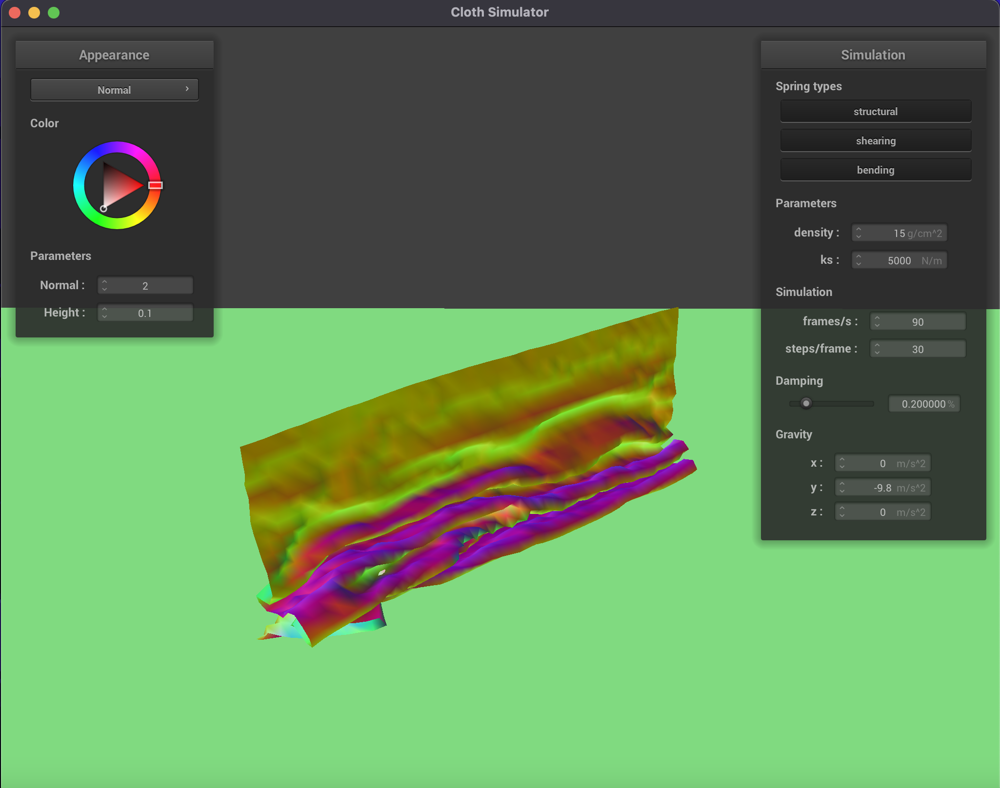

CS 184: Computer Graphics and Imaging, Spring 2024
Ian Dong
Overview
In this homework, I explored the physics behind cloth simulation by implementing a mass-spring system to
represent the cloth. I used Verlet integration to compute each of the PointMass objects' new position to simulate the cloth's movement. Then, I
implemented a way to detect cloth collision with outside objects as well as resolving self-collisions. Finally,
I added wind forces to the cloth to simulate the cloth's movement in the wind.
Section I: Masses and Springs
Explain how you implemented the mass-spring system to represent the cloth.
Because the cloth's springs needed to be in row major order, I first looped through the number of height
points as this represented each individual row before iterating through each of the width points to create
the required springs. I calculated the x position in order to fit
num_width_points within the cloth's width. Depending on whether the
cloth was horizontal or vertical, I made sure to set y to either be 1
or the correctly spaced out position fit the necessary number of width points and set z to either the correctly spaced out position fit the necessary number
of width points or the random offset. Before inserting the PointMass,
I checked to see the object should be pinned or not. Finally, I iterated through the two-dimensional grid
positions and converted them into the PointMass one-dimensional
vector position and checked for boundary conditions before creating the STRUCTURAL, SHEARING, and BENDING springs as listed in the homework description.
Take some screenshots of scene/pinned2.json from a viewing angle
where you can clearly see the cloth wireframe to show the structure of your point masses and springs.
Here are some screenshots of the cloth wireframe from
scene/pinned2.json:

pinned2.json close up view
|
pinned2.json above view
|
Show us what the wireframe looks like (1) without any shearing constraints, (2) with only shearing
constraints, and (3) with all constraints.

pinned2.json no shearing constraints
|

pinned2.json only shearing constraints
|
pinned2.json all constraints
|
Section II: Simulation via Numerical Integration
Show us a screenshot of your shaded cloth from scene/pinned4.json in its final resting state! If you choose
to use different parameters than the default ones, please list them.
Here are the screenshots of the shaded cloth from
scene/pinned4.json in
its final resting state for both the wireframe and shaded versions:
pinned4.json wireframe
|

pinned4.json normals
|
Section III: Handling Collisions with Other Objects
Explain how you handled collisions with the sphere and the plane.
In this portion of the homework, I implemented a way to detect cloth collision with outside objects as well.
To handle collisions with a sphere, I modified Sphere::collide and
calculated the distance between the sphere's center and the given point mass to see whether it had already
intersected within the sphere. If it had, I calculated the penetration depth and moved the point mass out of
the sphere along the trajectory had it not collided, lying on the sphere's surface tangent. To handle
collisions with a plane, I modified Plane::collide and calculated to
see whether the two positions at the time steps were at opposite side of the plane If it was, I calculated
the penetration depth and moved the point mass out of the plane along the trajectory had it not collided,
lying on the plane's surface tangent. Finally, for both, we applied the friction and scaled down the
correction vector.
Show us screenshots of your shaded cloth from scene/sphere.json in its final resting state on the sphere
using the default ks = 5000 as well as with 500 and 50000. Describe
the differences in the results.
Here are the screenshots of the shaded cloth from
scene/sphere.json with
different
ks values in its final resting state on the sphere:

sphere.json with ks = 500
|
sphere.json with ks = 5000
|
sphere.json with ks = 50000
|
ks represents the stiffness of the spring. As the value of
ks increases, the cloth becomes more rigid and less likely to fully rest on
top of the sphere. As shown above, the leftmost image depicts the cloth almost fully resting on top of the
sphere and because the springs' corrective forces are weak more points on the sphere fall due to gravity.
However, the rightmost image depicts a more dramatic scene where the cloth is much more rigid and less likely to
fully rest on top of the sphere as the strong spring forces work to oppose gravity.
Show us a screenshot of your shaded cloth lying peacefully at rest on the plane. If you haven't by now, feel
free to express your colorful creativity with the cloth! (You will need to complete the shaders portion
first to show custom colors.)
Here is a screenshot of the shaded cloth lying peacefully at rest on the plane:
 Cloth at rest on the plane
Cloth at rest on the plane
|
Section IV: Handling Self-Collisions
Show us at least 3 screenshots that document how your cloth falls and folds on itself, starting with an
early, initial self-collision and ending with the cloth at a more restful state (even if it is still
slightly bouncy on the ground).
Here are the screenshots that document how the cloth falls and collides with itself.
|
Cloth dropping
|
 Initial self-collisions
Initial self-collisions
|
|
More self-collisions
|

Additional self-collisions
|
|
Falling onto ground
|
 Restful state
Restful state
|